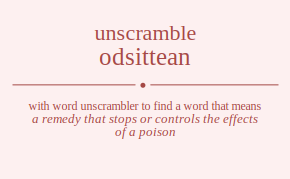

The word found after unscrambling odsittean means that a remedy that stops or controls the effects of a poison, .
odsittean has jumble solution. Please see which words made after unscrambling odsittean.
Daily Jumble Solution: stationed
You can use following links to see other word jumble solutions for the same day
aaabcn hnyis odsittean orled trumet

Unscrambled 9 letter words from odsittean
antidotes
stationed
Unscrambled 8 letter words from odsittean
instated
antidote
tetanoid
astonied
sedation
Unscrambled 7 letter words from odsittean
toniest
dotiest
dentist
distent
stinted
station
notates
instate
satinet
atonies
distant
toasted
attends
notated
donates
iodates
toadies
tainted
destain
detains
instead
nidates
sainted
stained
Unscrambled 6 letter words from odsittean
stotin
teston
sitten
dittos
sotted
stoned
toited
todies
tinted
teinds
donsie
noised
onside
tatsoi
statin
taints
tanist
titans
notate
atones
seitan
tenias
tineas
tisane
dattos
adonis
danios
stated
tasted
attend
staned
atoned
donate
anodes
iodate
detain
nidate
sained
Unscrambled 5 letter words from odsittean
toits
stint
tints
totes
netts
stent
tents
notes
onset
seton
steno
stone
tones
inset
neist
nites
senti
stein
tines
eosin
noise
ditto
doits
odist
dints
tondi
dinos
toted
doest
dotes
dents
tends
noted
toned
nodes
nosed
sonde
deist
diets
dites
edits
sited
stied
tides
eidos
teind
tined
dines
nides
snide
stoat
toast
tanto
santo
iotas
ostia
stoai
taint
titan
antis
saint
satin
stain
tains
state
taste
tates
teats
testa
stoae
toeas
antes
etnas
nates
neats
stane
atone
oaten
aeons
entia
tenia
tinea
anise
datto
datos
doats
toads
stand
donas
adits
ditas
staid
tsadi
adios
danio
dates
sated
stade
stead
tsade
anted
deans
saned
sedan
anode
aides
aside
ideas
Unscrambled 4 letter words from odsittean
stot
tost
tots
snot
tons
tits
toit
tint
nits
snit
tins
into
ions
sett
stet
test
tets
tote
toes
nett
tent
nest
nets
sent
tens
note
tone
eons
noes
nose
ones
sone
site
ties
nite
tine
sine
dost
dots
tods
dons
nods
dits
doit
dint
dins
dino
nodi
teds
dote
toed
does
dose
odes
dent
tend
dens
ends
send
sned
done
node
diet
dite
edit
tide
tied
dies
ides
side
deni
dine
nide
stat
tats
oast
oats
stoa
taos
ants
tans
nota
naos
aits
sati
iota
anti
tain
ains
anis
sain
naoi
tate
teat
ates
east
eats
etas
sate
seat
seta
teas
toea
ante
etna
neat
anes
sane
aeon
tads
dato
doat
toad
ados
odas
soda
ands
dans
sand
dona
adit
dita
aids
dais
sadi
said
date
sade
odea
dean
aide
idea
Unscrambled 3 letter words from odsittean
tot
sot
not
ton
nos
ons
son
tit
its
sit
tis
nit
tin
ins
sin
ion
tet
set
toe
oes
ose
net
ten
ens
sen
eon
one
tie
sei
dot
tod
dos
ods
sod
don
nod
dit
dis
ids
din
ted
eds
doe
ode
den
end
die
att
tat
sat
tas
oat
tao
ant
tan
ait
ais
ain
ani
ate
eat
eta
tae
tea
sae
sea
ane
nae
tad
ads
sad
ado
oda
and
dan
aid
Unscrambled 2 letter words from odsittean
to
os
so
no
on
it
ti
is
si
oi
in
et
es
oe
en
ne
do
od
id
de
ed
at
ta
as
an
na
ai
ae
ad